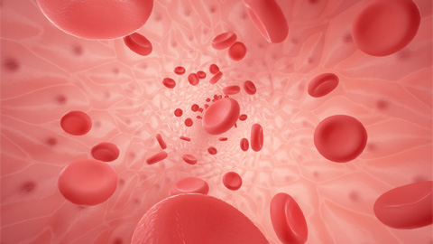
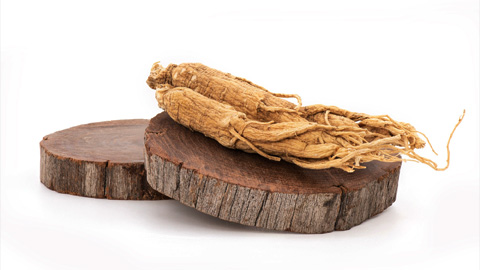
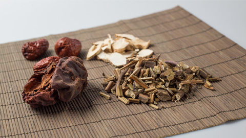
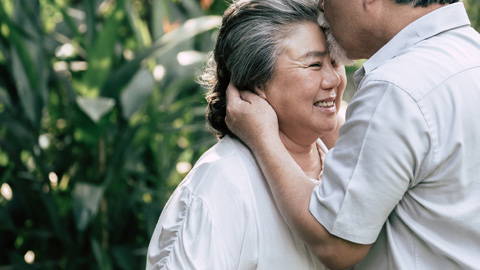
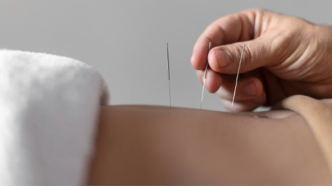
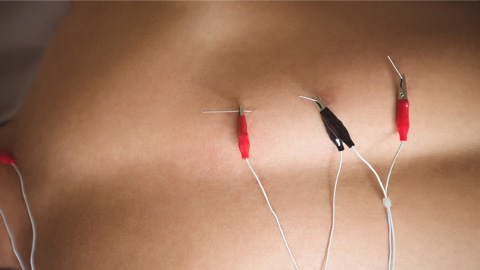

암 치료환자에게 처방되는 약침치료는 환자의 상태에 따라 적용하여 통증완화와 항암치료 및 항암 방사선 치료의 효율을 돕습니다.
자율신경이 자리하는 척추 주위에 있는 경혈에 약침을 주입하여 자율신경 기능활성 및 균형조절을 통해 체내 면역을 높여주는 치료법입니다.

혈행 개선
암 환자의 기혈 순환을 활성화하여 염증과 통증을 완화하고 저항력을 회복시킵니다. 또한 소화기능을 개선하여 영양 순환을 개선합니다.

항암 보조 치료
바로한방병원의 약침은 산양삼 증류 추출 항암성분이 함유되어 강한 항산화 작용과 신경영양 인자의 상위 조절, 항 세포사멸효과를 유도합니다. 항암치료의 효율을 보조할 수 있습니다.
암성피로 및 식욕부진 개선
만성 질환에 의한 기력 저하인 기허증에 특히 효과가 좋아 피로와 식욕부진을 개선하여 환자의 삶의 질을 개선할 수 있습니다.

한약
암 환자가 겪는 대부분의 항암치료 및 항암 방사선 치료의 부작용인 암성피로, 항암제 후 오심구토, 항암제 후 식욕부진, 항암제 후 손발저림, 방사선 후 구강건조 등을 완화하는데 도움이 됩니다.
나아가 암 환자의 저하된 기력과 면역을 개선하여 치료 의지와 치료 효과를 극대화할 수 있도록 기혈을 개선시킵니다.
항암 부작용 예방과 완화
바로한방병원의 한방 프로그램은 면역력 강화에 초점을 두어 오랜 투병 기간으로 발생하는 부작용을 해소하는데 노력합니다.

암성피로 회복과 심신 안정
암성 피로와 더불어 치료 중의 만성적인 심신의 피로를 케어할 수 있습니다. 이를 통해 환자의 치료 의지와 삶의 질을 크게 개선합니다.
암성면역 강화와 통증 완화
산삼, 황기 등 항산화에 효과적인 약재를 포함하여 면역 강화와 더불어 소염작용을 통해 항암 치료 전후에 발생하는 고질적인 통증을 개선하는데 도움을 줍니다.
침구치료
바로한방병원의 침술 치료는 항암 치료 및 항암 방사선치료 중에 발생되는 부작용과 이후에 지속되는 후유증에 대한 종합적인 치료와 관리를 도와드립니다.
항암치료 부작용 줄이고 후유증을 개선하여 환자들의 치료 효과를 극대화하고 삶의 질을 개선하는 것을 목표로 합니다.

통증 완화
침술은 근막에 직접 자극을 주고 뇌와 중추신경에 긍정적인 자극을 주어 통증 완화에 효과적입니다. 2009년에는 미시간대학에서 침술을 통해 장기적으로 통증 조절이 되는 기전을 처음 밝혀내기도 했습니다.

부작용 억제와 후유증 완화
전침은 항암제의 부작용인 신경병증성 통증을 크게 완화한다는 연구사례가 있습니다. 특히 국내 한 연구에 따르면 전기침으로 항암제 부작용 50% 줄인다는 연구 결과가 확인되었습니다.
항암 치료의 효율 증가
침술은 암환자도 안전하게 받을 수 있고 반복적으로 치료 받을 수 있어 항암 약물요법 및 방사선치료를 하는 과정에서도 침 치료를 병행할 수 있습니다.